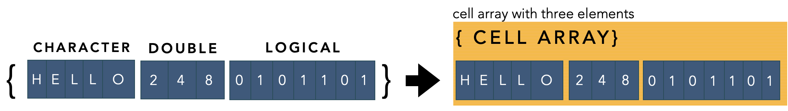

Cell Array
For Handling Mixed Data Types (Numbers, Letters, Words)
Overview
🛍 The cell array is the mystery grab bag of variable types. It was designed to store disparate information, such as character and numeric information, side by side, element by element in the same array. Importantly, this disparate information doesn't even need to be the same size, making cell arrays useful for organizing character arrays or other arrays of unpredictable dimensions.

Important Terminology
- Cell Array: A cell array is a data type with indexed data containers called cells. Each cell can contain any type of data.
MATLAB documentation
Important MATLAB Functions
- cellfun: apply the same function to each cell of a cell array
- cell2mat: convert cell arrays to numeric arrays
- cellstr: Convert to cell array of character vectors
Special MATLAB Characters
-
{ }- curly brackets -
( )- parentheses
Learning Objectives
-
Explain why you would use a cell array.
-
Assign values to the elements of a cell array using the
{}or()special characters -
Correctly index a cell array to access its contents
-
Describe the difference between indexing cell arrays and numeric arrays
-
Correctly input cell arrays into functions
Why Cell Arrays?
The Trouble With the Fundamental Classes
All right. So we already figured out how to store numbers, characters, and booleans in arrays (review the Basic Data Class modules if you don’t know what I’m talking about). Recall that in these fundamental classes, each element of the array contains a single piece of information, either a number, a character, or a true/false, depending on the class type. These three variable types can hold pretty much any type of information that we need.
So, why do we need to learn about other variable types?
Well, while very useful, the fundamental data types have certain restrictions that at times can become onerous for use at scale. For example, when storing rows of characters in a character array (i.e. a character matrix), you need to pad the array with empty spaces so that the number of columns is the same across all rows in the character matrix. This gets complicated when you are trying to store a series of characters, like names.
Now, the function char can simplify this process.
Example: Using char to pad character matrices
In this example, we will store a series of Girls Names that were popular in the 90's (ok, millennial)
Note the varying number of spaces added after each name, save for the longest name, 'Samantha'
But, while char easily manages the padding, we would need to run this function every time we want to add a new row to the character array, which can get computationally burdensome (a fancy way of saying slow). Not to mention the fact that adding extra spaces to each row of a character array can make things tricky if you need to know the length of each character array. Say, for example, you wanted to know the average length of popular names in 1995. You would have to come up with a method to exclude those extraneous spaces in your count. This is certainly doable but adds unnecessary steps to the procedure.
Cell Arrays to the Rescue
Cell arrays solve these problems by eliminating the need for a single value (number, character, or boolean) in each element of the array. Instead, you can have a whole array in a single element of a cell array. To differentiate this functionality, elements in cell arrays are also known as cells.
Each cell of a cell array is like a box into which you can stuff other arrays—even other cell arrays. This can be very useful for organizing information, but can sometimes make indexing a bit of a pain.
Cell Array Assignment
You create cell arrays using the special character Curly Brackets: { }.
Example: Creating a Cell array with the curly brackets
To create the previous array as a cell array, you use the following syntax:
Here, names90s is a 4x1 cell array. Each cell (or element) in names90s contains a character array. Notice that we did not need to add any extraneous spaces to any of the character arrays. Also notice that we used the curly brackets as a concatenating tool, similar to the way we used square brackets to concatenate numbers in numeric arrays. Much of the rest of the syntax should look familiar: Inside the curly brackets, we used the single-quotes to concatenate the character arrays that we wanted packaged into the elements of the cell array. We also used semi-colons to indicate new rows in the cell array.
There are some subtleties when creating a cell array.
Compare the following:
Concatenate four separate character scalars into a cell array
| Create 1x4 cell array | |
|---|---|
...Here we get a 1x4 cell vector with 4 elements that each contain a separate character scalar (a,b,c, or d).
Embed a single character vector into one cell element
| Create a 1X1 cell array | |
|---|---|
…Here we get 1X1 cell scalar with a single cell that contains the character vector ('abcd').
Challenge: Cell Array Assignment
Consider the following
-
What size cell array would the following return?
-
What is found inside each cell of the cell array?
-
What are the dimensions of each of those contents?
Store Anything in Cell Arrays
One of the advantages of a cell array is that you can store anything you want in its cells. Consider the following:
| Concatenating different data types in a cell array | |
|---|---|
…Here, we use the curly brackets to concatenate four separate values: into a cell array: a number, a character, and two logical values, true and false. This syntax packages the values into separate cells of a cell array. Notice that the output in the command window has the value in each cell surrounded by both a square bracket (or single quotes) and a curly bracket. This means that each value is individually packaged into a separate element of the cell array.
Concatenating Cell Arrays
We can use Square brackets for Cell Arrays if we want to concatenate the individual cells. Consider the following:
| Concatenating cell arrays | |
|---|---|
cell_ar2 =
1×3 cell array
{[2]} {'b'} {[0]}
cell_ar3 =
1×7 cell array
{[1]} {'a'} {[1]} {[0]} {[2]} {'b'} {[0]}
…Here we first create a 1X3 cell vector, cell_ar2. Then we use the square brackets to concatenate the two cell arrays, cell_ar and cell_ar2 into one larger, 1x7 cell array, cell_ar3.
Square vs Curly Bracket Concatenation
General Use-cases for Square and Curly Bracket Concatenation.
Square brackets [ ] are used to concatenate variables of the same type and row dimension. Using square brackets will return the same variable type that you started with.
Curly brackets { }, on the other hand, are used to create cell arrays. Any array found inside the curly brackets will be added to a new cell of the cell array. By using curly brackets, you can concatenate disparate variables and variable types into a single cell array.
Concatenating Variables With Dimensional Disparities
Another powerful use for cell arrays is to concatenate variables that have different dimensions. This is especially useful when you can't easily predict the dimensions of the data that you are trying to concatenate. We already saw an example of this when we concatenated character arrays of different lengths into the elements of a cell array (Recall the cell array, names90s, with the girl names).
We can do the same with numeric or logical arrays.
Concatenating Numeric Arrays with different dimensions in a cell array
We can package arrays of varying dimension into a cell array, using the following syntax:
Let's break the syntax down in detail:
- The variable name to be assigned is
ca -
On the right side of the equal sign, the outer most brackets are the curly brackets, which generates a cell array.
-
Inside these curly brackets, there are six pairs of Concatenating Special Characters: 1 pair of Single Quotes and five pairs of Square Brackets. These concatenating characters are used to generate a different sized arrays of different classes, which is then packaged into one of cells of the cell array. Notice that the last cell in this cell array contains an empty numeric array, which is a thing you can do in cell arrays. You can leave a cell in a cell array empty.
-
The square brackets are separated by semi-colons to indicate a new row in the cell array.
- Executing the above statement results in the following
ca =
6×1 cell array
{'Ab' } % 1x2 char array
{[ 1]} % 1x1 numeric array
{[ 2 3]} % 1X2 numeric array
{[ 1 0]} % 1x2 logical array
{2×2 logical} % 2x2 logical array
{0×0 double } % empty array
As you can see, what we get is a cell array with six different rows and one column. In each row, there is different array of varying dimensions including one empty array
Cell Indexing
Ok, so we can now get stuff into cell arrays. How do we get them out? Well, that depends on what you need.
Parenthetical Indexing
If you simply want a smaller cell array, then you would use the parentheses ( ) as follows:
| Parentheses return smaller cell arrays | |
|---|---|
… This syntax returns the first two cells from the cell array as a new, smaller, 2x1 cell array. This type of syntax should feel familiar. This is how we index fundamental data types, which also returns smaller versions of the original arrays.
Curly Bracket Indexing
If you want to extract the contents from inside the elements of a cell array, then you use the curly brackets. This is easy and intuitive for one cell:
| Curly brackets extract contents from each cell | |
|---|---|
…Notice that this syntax returns not a smaller cell array but the contents from inside the indicated cell, replete with data type. In this case, we get a character array containing the characters 'Ab'.
Extracting the content from multiple cells in a cell array
What happens when we use the curly brackets to extract content from multiple cells?
Let's have a look. The following syntax extracts the contents from cells 2 through 4 in ca:
| Curly Bracket of multiple cells returns a Comma-Separated List | |
|---|---|
…When we index multiple cells using the curly brackets, we get the contents of each cell, spit out, one after the other, into the workspace, overwriting ans each time. Here we get the contents of the first cell, 'Ab', followed by the contents of the second cell, [2 3], followed by the contents of the third cell, [1 0]. Notice that ans ends up assigned only the 1x2 logical array , [1 0].
comma-separated lists
Using the curly brackets to index out multiple cells returns what is known as a "comma-separated list" (even though there are no commas). This simply means that the contents from each cell are spit out, one after the other, into the workspace. Such an output makes sense from a general point of view, as there is no guarantee that the contents from a given cell in a cell array can be concatenated with the contents from any other elements of the same cell array.
The trouble with Curly Bracket indexing
So we can extract the contents from multiple cells using the curly brackets. How do we concatenate that data into a new variable? Turns out, its a little tricky.
If the contents of the cell arrays are the same type, we can use the Square Brackets to concatenate the contents. For example, in ca, cells 2 and 3 contain numeric arrays. We can extract that data using the curly brackets and then concatenate the data using square brackets, as follows:
| Concatenate contents from multiple cells using square brackets | |
|---|---|
This syntax just jams all of the numeric values into one numeric array. Which may be what you want. But not always.
Consider the names90 cell array that we created at the top of this module
We can extract contents from all cells as a comma-separated list using the following syntax
| Extract All Content as comma-separated list | |
|---|---|
But if we try to concatenate this content using the square brackets…
| Extract and Concatenate | |
|---|---|
…We get all of the content crammed into one character array, which may not be what we want, especially since there is no separation between the names.
Similarly, notice that there is no easy way to concatenate cells 4 and 5 since those contents have different dimensions.
| Extracting and Concatenating Disparate content returns error | |
|---|---|
Error using horzcat
Dimensions of arrays being concatenated are not consistent.
Since you can put anything in each cell of the array, you can't easily extract and concatenate the content from multiple cells—the syntax can get convoluted to get what you want.
Cell Indexing Takeaways
The Main Takeaway: that indexing with ( ) returns smaller cell arrays while indexing with { } returns the contents from the elements inside the cell arrays, sometimes in unexpected ways. Always keep these two different types of syntaxes in mind when indexing cell arrays.
But, really, the main takeaway is that cell array indexing can be a major source of syntax errors and hair-pulling frustration and should be avoided if at all possible! That is, use other variable class types whenever possible or only put similar items in the elements of a cell array.
Challenge: Cell Indexing
Show the syntax to index the last three elements in ca to get back a smaller cell array. What do you get?
Show the syntax to index out the contents from cell 3. What do you get?
Cell Arrays and Functions
Since the actually data in a cell array is packaged into cells, you need to take care when inputting cell arrays into functions. This is a major potential source of syntax errors. Many functions expect the contents from cells in the cell array, not the cell array itself.
Improper Inputting of Cells into Functions
Consider our cell array, ca:
Say, we want to add up the contents from the second and third cells using the function sum. If we don't index correctly, we will get an error:
| Indexing with Parentheses Returns error | |
|---|---|
Error using sum
Invalid data type. First argument must be numeric or logical.
This error means that the function sum does not accept cell arrays as inputs. Remember, since we indexed with parentheses, we got a smaller cell array back.
If we instead use the curly brackets to access the contents…
| Indexing with Curly Brackets may not work properly in functions | |
|---|---|
…We get a result…
…But not the correct result. We just get the sum of the first cell, which contains the value 1. This is because using curly brackets on multiple cells of a cell array returns a comma-separate list. When that happens, the function sum just uses the first output.
The correct syntax to correctly sum cells 2 and 3 is as follows:
| Correct Input into sum | |
|---|---|
Notice that we needed to first index using the curly brackets and then concatenate the output using the square brackets. Finally, we get the right result.
So, as you can see, there are some issues with indexing cell arrays. As we'll see in later modules, there are different complex variable types to help tackle these issues.
cellfun - Putting the Fun Back in Cell Arrays
The function cellfun was built to methodically extract the contents from each element in a cell array, perform an operation on those contents (like a function), and then return the output from that operation.
Take for example, the function numel, which returns the number of elements in an array. If we plug our cell array into numel…
… we get 6, which is the number of cells in ca. But what if we wanted to know how many elements are in each array contained in the cells of ca? This is where the function cellfun comes in handy.
Using cellfun to count the number of elements in each cell of a cell array.
To get the number of elements in each array found in ca, we use the following syntax
…Perfect, now we get the element count for each cell in ca. Recall that the last cell in ca was empty.
Let's unpack the syntax a little further:
- The first input into
cellfunis the handle to the functionnumel. A handle is simply the function name preceded by the@symbol. This directscellfunto use the functionnumelas an input (instead of first trying to execute that function and using the output from that function as an input). - The second input into
cellfunis the cell array - The output from
cellfunreturns the action of numel on each cell ofca. This output is similar to repeated calls to numel as follows:
The function cellfun greatly simplifies performing operations on cells in a cell array. Sometimes, though, the function that we want to use doesn't return a tidy output, like a single number, which can then be packaged into a numeric array. What if we wanted to know the class of each array contained in the cells of the cell array? Class names, like 'Char' and 'Double', vary by length, so they must be stored in—you guessed it—another cell array. To tell cellfun to output a cell array, we add a couple of inputs, as follows:
| cellfun with UniformOutput set to false | |
|---|---|
…and we get the output nicely packaged in a cell array
Post-mortem
-
Cell arrays are great for organizing disparate information of different dimensions
-
Cell arrays are less great for getting that disparate information back out again.
-
Watch what you input into functions when cell arrays are involved. If you get an error, you probably messed up the indexing.